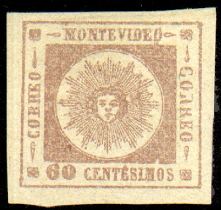
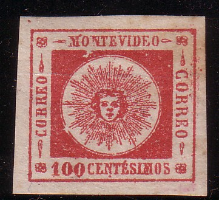
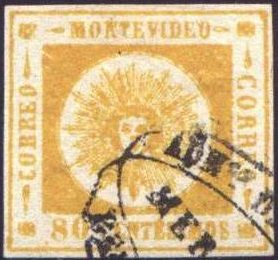
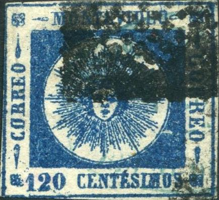

{kind=link}

Return To Catalogue - Uruguay 1859-60 'Sun' issue, forgeries part 1 - Uruguay 1859-60 'Sun' issue, forgeries by Fournier - Uruguay 1859-60 'Sun' issue, forgeries by Sperati - Uruguay 1858 'Sun' issue - Uruguay 1877-1920
Note: on my website many of the
pictures can not be seen! They are of course present in the
catalogue;
contact me if you want to purchase it.


All the above stamps are genuine!


Most likely genuine
(reduced size)
60 c lilac 80 c yellow 100 c red 120 c blue 180 c green 240 c red
Of each of these stamps 2 main types exist with thin and thick numerals (except the 240 c, only thin numerals), since the thin numerals were too small. The 120 c exists bisected (used as a 60 c stamp). In genuine stamps, the second 'E' of 'CENTESIMOS' has an accent. The left 'CORREO' is always smaller than the right 'CORREO'. Due to the smaller size of the left 'CORREO', it resembles more 'COBREO' or 'CORHEO'.
Value of the stamps |
|||
vc = very common c = common * = not so common ** = uncommon |
*** = very uncommon R = rare RR = very rare RRR = extremely rare |
||
| Value | Unused | Used | Remarks |
| Thin Numerals (1859) | |||
| 60 c | RR | RR | |
| 80 c | RRR | RRR | |
| 100 c | RRR | RRR | |
| 120 c | RRR | RR | |
| 180 c | RR | RR | |
| 240 c | RRR | RRR | |
| Thick Numerals (1860) | |||
| 60 c | RR | RR | |
| 80 c | RR | RR | |
| 100 c | RRR | RR | |
| 120 c | RR | RR | |
| 180 c | RRR | RRR | |
80 c thick numerals, top left part of the sheet(?); note the
different positions of the '80'.


Probably type 11 of the 80 c thick numerals, break in the lower
frameline below '0' of '80'.

100 c thick numerals, position 7 of the plate; ink lacking under
'O' of 'MONTEVIDEO'.

100 c thick numerals, position 10; left frameline broken at 'EO'
of 'CORREO' and upper left tear divided into two.

120 c thick numerals, Position 11, white space above the '120'.
120 c thick numerals, position 12, scratch going through the
outer right frame and the upper tear ornament.
Elliptic cancel with 'ADMon DE CORREOS MONTEVIDEO' in the outer
part and the date in the center.

Circular or elliptic(?) 'CORREOS' cancel.

Letter with the 'negative' cancel of Salto, also a 'RENTA DE
CORREOS SALTO' circular date cancel. Next to it another stamp
with this cancel.
Typical cancel, consisting of two staggered ellipses, 'ADMon DE CORREOS' on top, 'REP O DEL URUG' below and city name in the center. I've seen Arredondo, Cerro-Largo, Colonia, Dolores, Durazno, Mercedes, Nueva-Palmira, Paysandú and San-Carlos.


Paysandú cancels; 'ADMon DE CORREOS PAYSANDÚ REP O DEL URUG'


Same cancel, but for the town of Mercedes.

Colonia cancel.


Arrendondo (nowadays called Rio Branca) cancel. Arrendondo is
nowadays called Rio Branca. Note that forgeries exist with a
wrong townname ARREGONDO ('G' instead of 'D'), also with 'BRUG'
instead of 'URUG'.


Cerro-Largo cancel

Dolores cancel
Elliptic cancel with 'SUCURSAL' in the center:

Others:

Mute unlisted square cancel consisting of dots?
Forgeries:
Uruguay 1859-60 'Sun' issue, forgeries
part 1
Uruguay 1859-60 'Sun' issue, forgeries by
Fournier
Uruguay 1859-60 'Sun' issue, forgeries by
Sperati
More on forgeries can be found on http://www.geocities.com/claghorn1p/Uruguay/index.htm (Bill Claghorn's site).
{kind=link}
{kind=link}